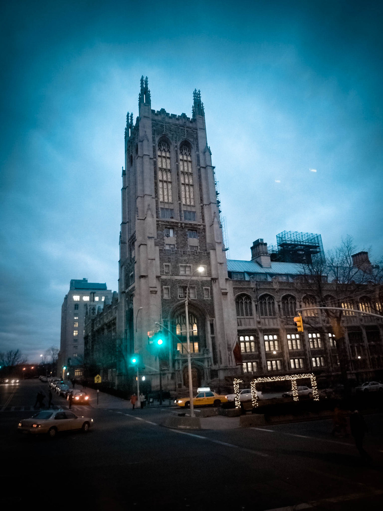
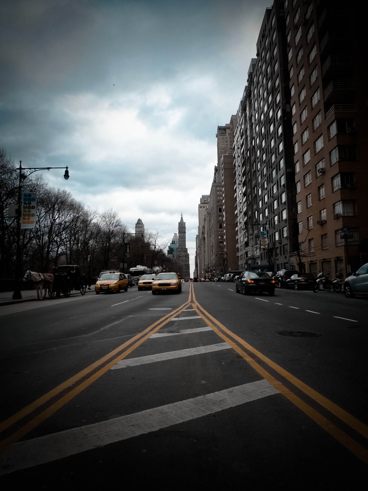
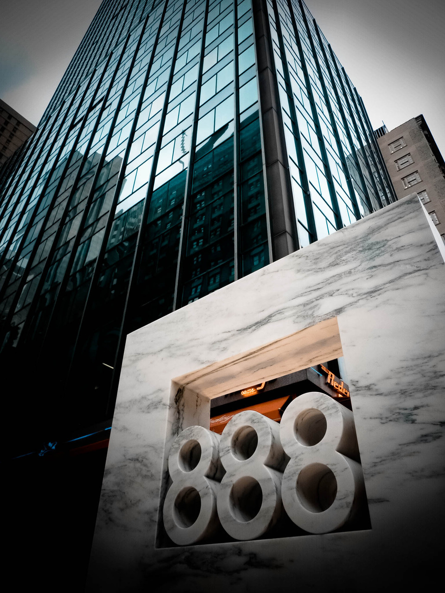
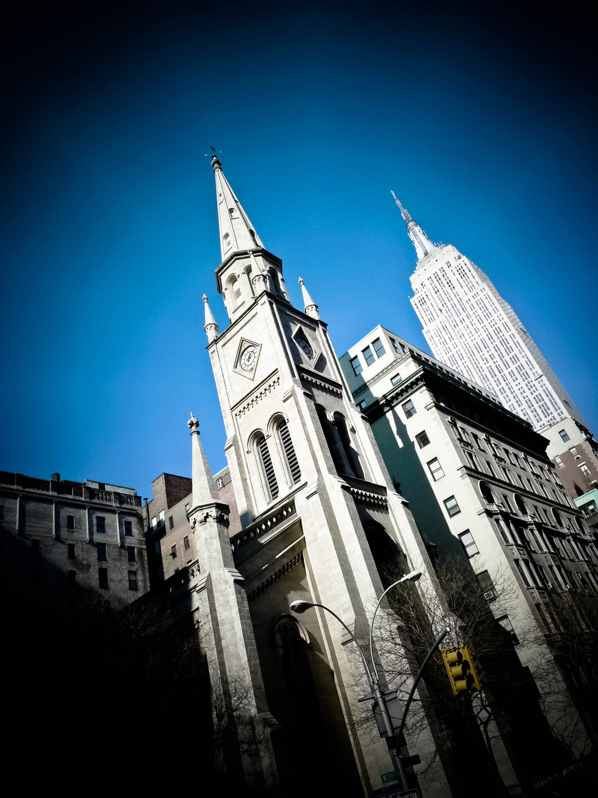
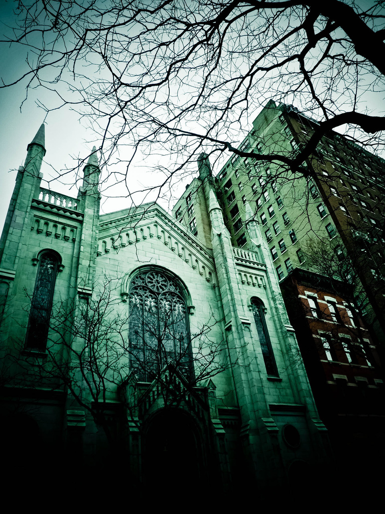

Fri, 20 Aug 2010 19:13:00 · City · Harlem · New York · NewYork · Street · leica
random shots of new york episode 1 of heres





Random Shots of New York ~ episode 1 of…
Here’s some collections of photographs from my last trip to New York in early 2009. I tried Adobe Lightroom for the first time, I think it’s a pretty decent tool IF you like manipulating photos; something that I never too keen of doing.
I never really spent too much time editing my photos, unless they’re for commercial purposes, but here we go…
–
O btw, I took those pix using my small Leica…